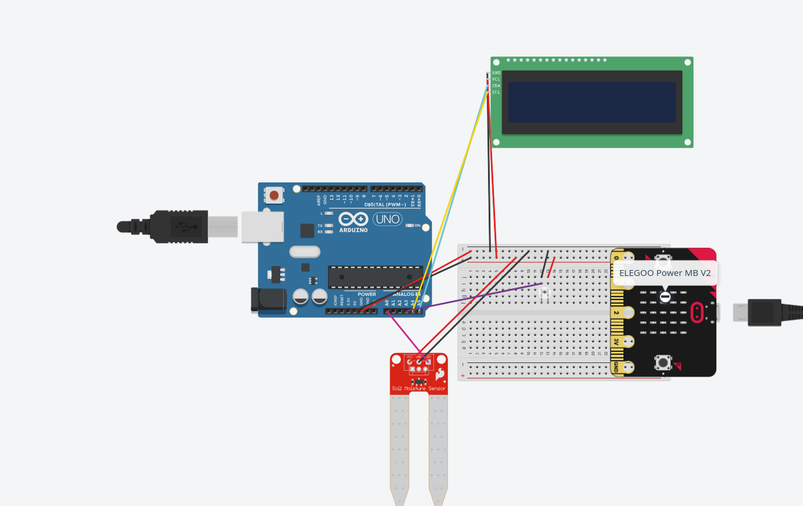
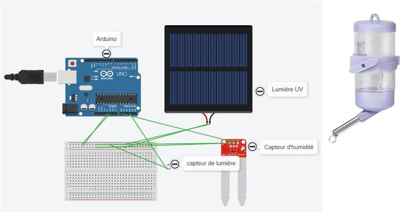

Projet – Système d’aide à l’entretien des plantes d’intérieur
Constat de départ
La botanique intérieure est un art qui ne peut survivre sans interaction humaine. Pour rester en santé, les plantes ont besoin d’un équilibre eau et lumière propre à leur espèce.
Avec les horaires chargés et les déplacements, il est facile d’oublier une plante ou de la négliger, ce qui peut mener à son affaiblissement ou à sa mort.
Même si les plantes n’ont pas de conscience, elles restent des êtres vivants dont l’entretien mérite d’être pris au sérieux.

Projet proposé
Pour simplifier la vie des utilisateurs tout en respectant les besoins des plantes, nous avons décidé de concevoir un système qui facilite leur entretien. L’objectif est d’offrir un outil simple, clair et efficace pour mieux comprendre et répondre aux besoins des plantes d’intérieur.
Visées du projet
- Permettre aux utilisateurs de garder leurs plantes en santé selon leur espèce
- Rendre la botanique intérieure plus accessible et agréable
- Offrir aux plantes une aide adaptée à leurs besoins réels
- Fournir des indications claires et faciles à comprendre
Contraintes
- Résistance à l’eau
- Coût abordable
- Adaptation à différents types de plantes
Proposition #1 – Système de notification du besoin de la plante (avec OpenFarm)

Description détaillée de la proposition
Le système de notification du besoin de la plante est une installation permettant d’aider l’utilisateur à maintenir une plante en bonne santé. Contrairement à un système automatisé, celui-ci n’agit pas directement sur l’environnement de la plante. Il se limite à analyser les conditions et à informer l’utilisateur lorsque quelque chose ne correspond pas aux besoins de la plante.
Le dispositif est composé d’un boîtier contenant la carte Elegoo MB V2, les breadboards et le câblage. Les fils sont protégés dans une gaine afin d’éviter les dommages causés par l’eau. Dans le pot, on retrouve un capteur d’humidité du sol, un capteur de lumière et un écran d’affichage.
Lorsque l’utilisateur sélectionne une plante, le système récupère ses besoins généraux à partir de la base de données OpenFarm. Ces informations permettent au système de comparer les mesures des capteurs avec les besoins réels de la plante. Si les conditions ne sont pas adéquates, un message apparaît sur l’écran pour informer l’utilisateur.
Fonctionnement du système
- L’utilisateur place la plante dans son pot.
- L’utilisateur sélectionne le type de plante.
- Le système interroge OpenFarm pour obtenir les besoins de la plante.
- Les capteurs mesurent l’humidité du sol et la luminosité.
- Les données sont envoyées au microcontrôleur.
- Le microcontrôleur compare les données avec les besoins.
- Un message apparaît si nécessaire.
- Les capteurs vérifient les conditions régulièrement.
Comment la proposition répond aux défis et contraintes
- Facilité d’utilisation : le système indique clairement ce qui manque à la plante.
- Accessibilité : OpenFarm permet de connaître les besoins des plantes.
- Fiabilité : les capteurs mesurent directement l’état réel de la plante.
- Durabilité : le boîtier protège les composants électroniques.
Schématisation matérielle prévue
- Carte Elegoo MB V2
- Capteur d’humidité du sol
- Capteur de lumière
- Écran d’affichage
- Boîtier de protection
Schématisation logicielle prévue
- Initialisation des capteurs et de l’écran
- Sélection de la plante
- Récupération des besoins via OpenFarm
- Lecture des données des capteurs
- Comparaison avec les besoins
- Affichage d’un message
- Attente
- Reprise du cycle
Justification du choix des technologies
- Elegoo MB V2 : microcontrôleur abordable et simple à programmer
- Capteur d’humidité du sol : mesure directe de l’humidité
- Capteur de lumière : mesure de la luminosité
- Écran d’affichage : communication claire avec l’utilisateur
- OpenFarm : base de données ouverte sur les besoins des plantes
- Arduino IDE : environnement de programmation simple
Proposition #2 – Système de conservation de plante

Description détaillée de la proposition
Le système de conservation de plante est une installation intelligente permettant d’aider à maintenir une plante en bonne santé automatiquement.
Le dispositif consiste en une grande boîte ouverte dans laquelle un pot contenant une plante est placé. Cette boîte est équipée de plusieurs capteurs qui mesurent l’environnement de la plante, notamment l’humidité du sol et la luminosité.
Le système est également capable d’agir automatiquement pour améliorer les conditions de la plante. Par exemple, si le sol est trop sec, un distributeur d’eau peut arroser la plante. Si la lumière est insuffisante, une lampe UV peut s’allumer afin de fournir la lumière nécessaire à la croissance.
L’utilisateur peut sélectionner le type de plante à l’aide d’une interface simple. Le système connaît alors les besoins généraux de cette plante et adapte ses actions en conséquence.
Ce système permet donc de faciliter l’entretien des plantes, particulièrement pour les personnes qui oublient de les arroser ou qui ne connaissent pas bien leurs besoins.
Fonctionnement du système
- L’utilisateur place une plante dans la boîte de conservation.
- L’utilisateur sélectionne le type de plante.
- Les capteurs mesurent l’humidité du sol et la luminosité.
- Les données sont envoyées au microcontrôleur.
- Le microcontrôleur compare les données avec les besoins de la plante.
- Le système agit automatiquement si nécessaire.
- Les capteurs vérifient les conditions régulièrement.
Comment la proposition répond aux défis et contraintes
- Facilité d’utilisation
- Accessibilité
- Fiabilité
- Durabilité
Interactions attendues
- Amorce : l’utilisateur place la plante et sélectionne son type.
- Déroulement : le système analyse les conditions et agit automatiquement.
- Interaction continue : l’utilisateur observe les actions du système.
- Temps d’interaction : fonctionnement continu.
Schématisation matérielle prévue
- Microcontrôleur Arduino
- Capteur d’humidité du sol
- Capteur de lumière
- Lampe UV
- Distributeur d’eau
- Réservoir d’eau
- Boîte contenant la plante
Schématisation logicielle prévue
- Initialisation des capteurs
- Lecture des données
- Comparaison avec les besoins
- Prise de décision
- Attente
- Reprise du cycle
Justification du choix des technologies
- Arduino
- Capteur d’humidité du sol
- Capteur de lumière
- Lumière UV
- Distributeur d’eau
- Arduino IDE